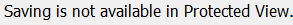

from datetime import datetime
from pprint import pprint
from string import Template
import csv
import re
alphabetic = re.compile('\D+')
# Let's speed things up.
Settings.MoveMouseDelay = 0
# Getting together some templates
pstuff = 'align="center" style="margin: 0px;"'
tdstyle = 'style="font-style: normal; font-family: Garamond; color: navy; font-size: 36pt; font-weight: normal;"'
timetdstyle = 'style="text-align: center; color: navy;"'
slide_template = Template('<p $pstuff><strong>COURT SCHEDULE - $date</strong></p><p $pstuff><table border="1" align="center" style="border: 1px solid navy;"><tbody><tr><td $tdstyle><strong>$jobtitle</strong></td><td $timetdstyle><strong>TIME</strong></td><td $tdstyle><strong>EVENT/NOTES</strong></td><td $tdstyle><strong>LOCATION</strong></td></tr>$rows</tbody></table></p>')
row_template = Template(
'<td $tdstyle>$judge</td><td $timetdstyle>$time</td><td $tdstyle>$event</td><td $tdstyle>$location</td></tr>')
def save_schedule():
"""Opens, saves schedules as csv, closes Excel.
Assumes you have Outlook open to the email with the Excel attachment.
Actually makes a lot of assumptions, but that's life with Sikuli.
"""
# It's a fuzzy match, so this should work:
doubleClick(Screen(1).wait(, 60))
# Also, the amount of "fuzz" is configurable.
wait(, 15)
type("s", Key.CTRL)
wait(, 3)
type("e")
wait(, 3)
type("\n")
wait(, 5)
type("cschedule.csv\tc\n")
if exists():
type("y")
wait(, 3)
type("y")
type(Key.F4, Key.ALT)
wait(, 3)
type("n")
def init_exhibio():
"""Let's pull up the Sikuli webpage."""
switchApp(r"C:\Program Files\Google\Chrome\Application\chrome.exe")
wait(, 30)
# Maximize
type(Key.SPACE, Key.ALT)
wait(0.5)
type("x")
wait(1)
type("L", Key.CTRL)
type("exhibio.circuit5.org\n")
if exists(, 5):
type("\texhibio\texhibio\n")
def findDay(today, tries):
"""Gets us into today's edit page."""
titles = {"MONDAY": ,
"TUESDAY": ,
"WEDNESDAY": ,
"THURSDAY": ,
"FRIDAY": }
def aux(tries):
"""This function isn't strictly necessary.
It tries to find the day's title in the list,
and scrolls through when it fails.
However, since we're using the shorter list mode,
all the days fit in one page. However, I'm leaving
it here for reference.
"""
try:
click(titles[today])
except FindFailed:
if tries > 0:
click()
aux(tries - 1)
else:
raise
click(wait(, 30))
click(wait(, 5))
click()
waitVanish(, 5)
aux(tries)
click(wait(, 3))
def pick_slide(n):
"""Pull up slide n."""
dropdown = wait(, 2).offset(60, 4)
click(dropdown)
# Each page is 13px below the previous. The first page is 15px from the
# drop-down box.
click(dropdown.offset(0, 2 + 19 * n))
# There isn't a visual indicator for when the slide is loaded, AFAICT. I'm
# just hoping 3 seconds is enough. :)
wait(3)
def get_location(r):
"""Takes a dict of data, parsed from our csv, and returns a location based on some (fairly arbitrary) rules"""
if r['room'].strip() == "Jury Assembly Room":
location = "Jury Assembly"
elif r['room']:
location = "%s - %s Floor" % (r['room'], r['floor'])
elif r['floor'] and r['event']:
# If we don't have a room, they have to check with security
location = r['floor'] + " Floor Security"
elif r['event']:
# There's a note
location = ""
return location
def get_event(e):
"""Takes event text, formats it per preferences that have been decided on, then returns it"""
event = e.partition("-")[0].partition(":")[0].strip()
for removal in [
" cont'd",
' Docket',
' PTC',
' VOP & Notice to Appear',
' Judicial Review',
' Detention']:
event = event.replace(removal, '')
return event
# Ok. Let's get our data.
def parse_judge_schedule():
"""This massages our schedule data out of the csv created by save_schedule().
It assumes we only have 2 categories of people: Judges and non-judges.
A lot of the gymnastics are in handling the freaky formatting we end up with
due to the original Excel file being decorated/intended for humans.
row[0] is the judge's name
row[4] is the time
row[6] is the event or note
row[8], if it exists, is the room/courtroom
row[10] is the floor
"""
cs = csv.reader(open(r'/home/dpflug/cschedule.csv'), dialect='excel')
today = datetime.strptime(cs.next()[6], "%B %d, %Y")
cs.next() # Skip the headers
schedules = {'judges': [], 'other': []}
current_judge = ''
out_of_order = False
current_position = 'judges'
for row in cs:
# Let's make this a bit more plain to read
r = dict(zip(['judge', 'blank', 'blank', 'blank',
'time', 'blank',
'event', 'blank',
'room', 'blank',
'floor'], row))
print(r)
if alphabetic.match(r['judge']):
# When names are out of order, they're either a visiting judge or
# some other official.
if out_of_order or r['judge'].lower() < current_judge.lower():
out_of_order = True
if popAsk("Is {} a judge?".format(r['judge'])):
current_position = 'judges'
sort_judges = True
else:
current_position = "other"
current_judge = r['judge'].title()
if current_judge == "Williams":
# Judge Ritterhoff-Williams wants to appear as such
current_judge = "RitterhoffWilliams"
# Don't include mediations or internal things
if (r['floor'] and r['event'].strip() and not r['event'] ==
'Mediations' and r['event'].find("Personnel") == -1):
# Now, let's add the data to our schedule
schedules[current_position].append((current_judge,
r['time'],
get_event(r['event']),
get_location(r)))
# Sort list of judges
schedules["judges"].sort(key=lambda k: k[0])
# and others
schedules["other"].sort(key=lambda k: k[0])
return(today, schedules)
def fill_table(data):
rows = len(data) - 1
type(Key.HOME)
for row_num, row in enumerate(data):
columns = len(row) - 1
for column_num, column in enumerate(row):
type(Key.DELETE * 5, Key.CTRL)
type(Key.END, Key.SHIFT)
print(row_num, column_num, rows, columns)
if row_num < rows or column_num < columns:
type("\t")
def enable_slide():
"""Makes sure current slide is active."""
click(wait(, 5))
click(wait(, 5))
# We can be pretty exact about this.
Settings.MinSimilarity = 0.85
disabled = wait(
,
2).offset(
225,
0).exists()
if disabled:
click(disabled)
click( )
# click("1440002819045.png")
click()
type(Key.PAGE_DOWN)
type(Key.UP)
# Wait on their little animation
wait(1)
# Return to default similarity
Settings.MinSimilarity = 0.7
def fill_schedules(sched_data, judges=True):
"""Fills our schedule pages with our schedule data.
TODO: Fix (split?) this function to work if there's multiple pages of non-judge schedule.
Arguments:
sched_data: List of pages. Pages are lists of schedule data. Schedule data is lists of columns in the table.
judges: True if we're filling in the judges' schedule
"""
for page_num, page in enumerate(paginate_schedule(sched_data, 9)):
if judges:
# The schedules start on the 3rd slide, and enumerate starts at 0
pick_slide(page_num + 3)
else:
# Everyone else only goes on the last slide.
pick_slide(find_last_slide())
#enable_slide()
click(wait())
click(wait().offset(0, 30))
type(Key.END, Key.CTRL)
type(Key.HOME, Key.CTRL + Key.SHIFT)
type(Key.DELETE)
paste(generate_table(page))
click()
if not popAsk("Look good?", "Page Finished"):
popup(
"I apologize. I've obviously gotten confused. Tell David: #7874, dpflug@circuit5.org.")
try:
click()
except:
popup(
"Something has gone wrong and you'll have to clean up after me, too. :( Sorry.")
return
save = click()
wait(, 30)
type(Key.ENTER)
type(Key.HOME, Key.CTRL)
def generate_table(data):
rows = ''
for row in data:
rows += row_template.substitute(dict(zip(['judge',
'time',
'event',
'location'],
row)),
tdstyle=tdstyle,
timetdstyle=timetdstyle)
paste(slide_template.substitute(pstuff=pstuff,
tdstyle=tdstyle,
timetdstyle=timetdstyle,
date=today.strftime("%m/%d/%Y"),
jobtitle='JUDGE',
rows=rows))
def find_last_slide():
"""Tries to OCR final slide info, falls back to asking the human."""
page_list = find().offset(42, 4).grow(110, 2).text()
try:
return int(re.search(r' of ?(\d+)\)', page_list).group(1))
except AttributeError:
return int(input(
"How many slides are there today? (What's the highest number in the \"(Page 1 of ...)\" part?)"))
def paginate_schedule(sched, per_page):
for start in xrange(0, len(sched), per_page):
yield sched[start:start + per_page]
#save_schedule()
today, schedules = parse_judge_schedule()
#init_exhibio()
#findDay(today.strftime("%A"), 1)
fill_schedules(schedules["judges"])
if schedules["other"]:
fill_schedules(schedules["other"], False)
)
# click("1440002819045.png")
click()
type(Key.PAGE_DOWN)
type(Key.UP)
# Wait on their little animation
wait(1)
# Return to default similarity
Settings.MinSimilarity = 0.7
def fill_schedules(sched_data, judges=True):
"""Fills our schedule pages with our schedule data.
TODO: Fix (split?) this function to work if there's multiple pages of non-judge schedule.
Arguments:
sched_data: List of pages. Pages are lists of schedule data. Schedule data is lists of columns in the table.
judges: True if we're filling in the judges' schedule
"""
for page_num, page in enumerate(paginate_schedule(sched_data, 9)):
if judges:
# The schedules start on the 3rd slide, and enumerate starts at 0
pick_slide(page_num + 3)
else:
# Everyone else only goes on the last slide.
pick_slide(find_last_slide())
#enable_slide()
click(wait())
click(wait().offset(0, 30))
type(Key.END, Key.CTRL)
type(Key.HOME, Key.CTRL + Key.SHIFT)
type(Key.DELETE)
paste(generate_table(page))
click()
if not popAsk("Look good?", "Page Finished"):
popup(
"I apologize. I've obviously gotten confused. Tell David: #7874, dpflug@circuit5.org.")
try:
click()
except:
popup(
"Something has gone wrong and you'll have to clean up after me, too. :( Sorry.")
return
save = click()
wait(, 30)
type(Key.ENTER)
type(Key.HOME, Key.CTRL)
def generate_table(data):
rows = ''
for row in data:
rows += row_template.substitute(dict(zip(['judge',
'time',
'event',
'location'],
row)),
tdstyle=tdstyle,
timetdstyle=timetdstyle)
paste(slide_template.substitute(pstuff=pstuff,
tdstyle=tdstyle,
timetdstyle=timetdstyle,
date=today.strftime("%m/%d/%Y"),
jobtitle='JUDGE',
rows=rows))
def find_last_slide():
"""Tries to OCR final slide info, falls back to asking the human."""
page_list = find().offset(42, 4).grow(110, 2).text()
try:
return int(re.search(r' of ?(\d+)\)', page_list).group(1))
except AttributeError:
return int(input(
"How many slides are there today? (What's the highest number in the \"(Page 1 of ...)\" part?)"))
def paginate_schedule(sched, per_page):
for start in xrange(0, len(sched), per_page):
yield sched[start:start + per_page]
#save_schedule()
today, schedules = parse_judge_schedule()
#init_exhibio()
#findDay(today.strftime("%A"), 1)
fill_schedules(schedules["judges"])
if schedules["other"]:
fill_schedules(schedules["other"], False)